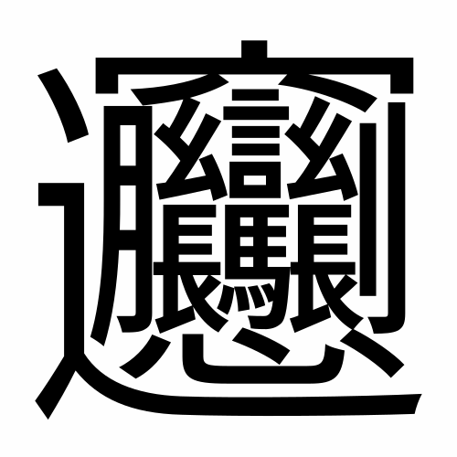

書き初めなににする？
？
U+FF1F
決める！
かなを含む
上のリンクをクリックすると、表示されている文字をGoogle検索できます
これはなに
CJK統合漢字（U+4E00～U+9FFF）をランダムに表示
チェックボックスをアクティブにすることで、平仮名（U+3041～U+3096）と片仮名（U+30A0～U+30FF）を追加してランダム表示
（U+30EDE）は表示されません
フォントには Google Font の Noto Serif シリーズを使用しています